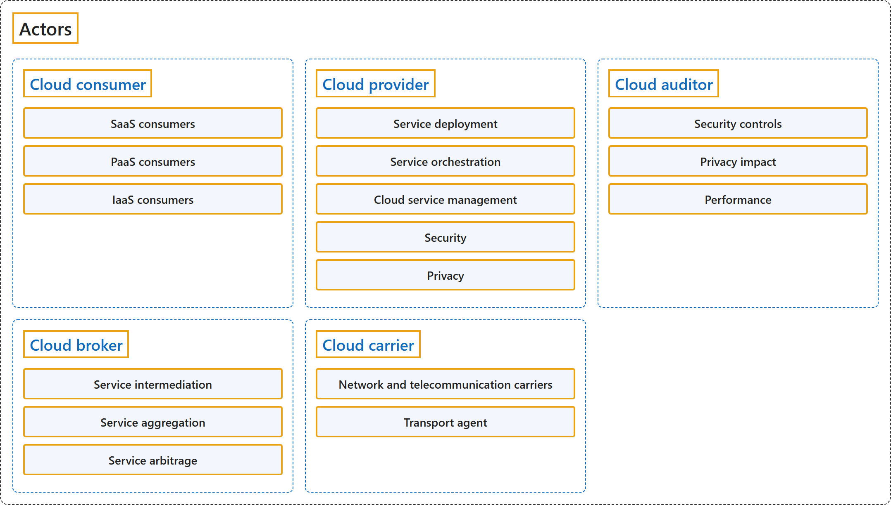

1.3 Actors
Classification

Glossary
| Term | Definition | 中文解释 | Source |
|---|---|---|---|
| Actors 参与者 |
"... the NIST cloud computing reference architecture defines five major actors: cloud consumer, cloud provider, cloud carrier, cloud auditor and cloud broker. Each actor is an entity (a person or an organization) that participates in a transaction or process and/or performs tasks in cloud computing." | ……NIST 云计算参考架构定义了五个主要参与者：云使用者、云提供者、云运营商、云审计者和云代理。每个参与者都是一个实体（个人或组织），它参与事务或流程，和/或在云计算中执行任务。 | Liu et al., 2011, Section 2.1, para. 2 |
| Cloud consumer 云使用者 |
"A cloud consumer represents a person or organization that maintains a business relationship with, and uses the service from a cloud provider." | 云使用者是一个个人或组织，它与云提供者保持业务关系，并使用其服务。 | Liu et al., 2011, Section 2.2, para. 1 |
| SaaS consumers SaaS 使用者 |
"The consumers of SaaS can be organizations that provide their members with access to software applications, end users who directly use software applications, or software application administrators who configure applications for end users." | SaaS 的使用者可以是为成员提供软件应用程序访问权限的组织、直接使用软件应用程序的最终用户，或为最终用户配置应用程序的软件应用程序管理员。 | Liu et al., 2011, Section 2.2, para. 4 |
| PaaS consumers PaaS 使用者 |
"Cloud consumers of PaaS can employ the tools and execution resources provided by cloud providers to develop, test, deploy and manage the applications hosted in a cloud environment." | PaaS 的云使用者可以利用云提供者提供的工具和执行资源，来开发、测试、部署和管理应用程序（这些应用程序托管在云环境中）。 | Liu et al., 2011, Section 2.2, para. 5 |
| IaaS consumers IaaS 使用者 |
"Consumers of IaaS have access to virtual computers, network-accessible storage, network infrastructure components, and other fundamental computing resources on which they can deploy and run arbitrary software." | IaaS 的使用者可以访问虚拟计算机、可通过网络访问的存储、网络基础结构组件以及其他基本计算资源，并在其上部署和运行任意软件。 | Liu et al., 2011, Section 2.2, para. 6 |
| Cloud provider 云提供者 |
"A cloud provider is a person, an organization; it is the entity responsible for making a service available to interested parties." | 云提供者是一个人或一个组织；它是负责提供服务的实体，服务对象是相关方。 | Liu et al., 2011, Section 2.3, para. 1 |
| Service deployment 服务部署 |
(context) "As identified in the NIST cloud computing definition [1], a cloud infrastructure may be operated in one of the following deployment models: public cloud, private cloud, community cloud, or hybrid cloud." | （语境）正如 NIST 云计算定义 [1] 所指出的，云基础结构可以按以下部署模型之一运营：公有云、私有云、社区云或混合云。 | Liu et al., 2011, Section 3.1, para. 1 |
| Service orchestration 服务编排 |
"Service Orchestration refers to the composition of system components to support the Cloud Providers activities in arrangement, coordination and management of computing resources in order to provide cloud services to Cloud Consumers." | 服务编排是指系统组件的组合，用来支持云提供者在计算资源的安排、协调和管理方面的活动，以便向云使用者提供云服务。 | Liu et al., 2011, Section 3.2, para. 1 |
| Cloud service management 云服务管理 |
"Cloud Service Management includes all of the service-related functions that are necessary for the management and operation of those services required by or proposed to cloud consumers." | 云服务管理包括所有与服务相关的功能，这些功能是云使用者所需或向其提议的服务的管理和运营所必需的。 | Liu et al., 2011, Section 3.3, para. 1 |
| Security 安全 |
"It is critical to recognize that security is a cross-cutting aspect of the architecture that spans across all layers of the reference model, ranging from physical security to application security." | 必须认识到，安全是架构的一个横切方面，它贯穿参考模型的所有层，从物理安全到应用程序安全。 | Liu et al., 2011, Section 3.4, para. 1 |
| Privacy 隐私 |
(context) "Cloud providers should protect the assured, proper, and consistent collection, processing, communication, use and disposition of personal information (PI) and personally identifiable information (PII) in the cloud [14]." | （语境）云提供者应当保护云中个人信息 (PI) 和个人身份信息 (PII) 的收集、处理、通信、使用和处置，使其有保障、恰当且一致。 | Liu et al., 2011, Section 3.5, para. 1 |
| Cloud auditor 云审计者 |
"A cloud auditor is a party that can perform an independent examination of cloud service controls with the intent to express an opinion thereon." | 云审计者是一方，它能够对云服务控制措施进行独立检查，目的是对其发表意见。 | Liu et al., 2011, Section 2.4, para. 1 |
| Security controls 安全控制措施 |
"Security controls [3] are the management, operational, and technical safeguards or countermeasures employed within an organizational information system to protect the confidentiality, integrity, and availability of the system and its information." | 安全控制措施 [3] 是组织的信息系统中采用的管理、运营和技术保护措施或对策，用于保护机密性、完整性和可用性，对象是系统及其信息。 | Liu et al., 2011, Section 2.4, para. 2 |
| Privacy impact 隐私影响 |
"A privacy impact audit can help Federal agencies comply with applicable privacy laws and regulations governing an individuals privacy, and to ensure confidentiality, integrity, and availability of an individuals personal information at every stage of development and operation." | 隐私影响审计可以帮助联邦机构遵守适用的隐私法律法规（这些法律法规管理个人隐私），并在开发和运营的每个阶段确保机密性、完整性和可用性，对象是个人的个人信息。 | Liu et al., 2011, Section 2.4, para. 3 |
| Performance 性能 |
(context) "A cloud auditor can evaluate the services provided by a cloud provider in terms of security controls, privacy impact, performance, etc." | （语境）云审计者可以评估云提供者所提供的服务，评估方面包括安全控制措施、隐私影响、性能等。 | Liu et al., 2011, Section 2.4, para. 1 |
| Cloud broker 云代理 |
"A cloud broker is an entity that manages the use, performance and delivery of cloud services and negotiates relationships between cloud providers and cloud consumers." | 云代理是一个实体，它管理云服务的使用、性能和交付，并在云提供者和云使用者之间协商关系。 | Liu et al., 2011, Section 2.5, para. 1 |
| Service intermediation 服务中介 |
"Service Intermediation: A cloud broker enhances a given service by improving some specific capability and providing value-added services to cloud consumers." | 服务中介：云代理增强某项服务，方法是改进某些特定能力并向云使用者提供增值服务。 | Liu et al., 2011, Section 2.5, list item 1 |
| Service aggregation 服务聚合 |
"Service Aggregation: A cloud broker combines and integrates multiple services into one or more new services." | 服务聚合：云代理把多个服务组合并集成为一个或多个新服务。 | Liu et al., 2011, Section 2.5, list item 2 |
| Service arbitrage 服务套利 |
"Service Arbitrage: Service arbitrage is similar to service aggregation except that the services being aggregated are not fixed." | 服务套利：服务套利与服务聚合类似，区别在于被聚合的服务不是固定的。 | Liu et al., 2011, Section 2.5, list item 3 |
| Cloud carrier 云运营商 |
"A cloud carrier acts as an intermediary that provides connectivity and transport of cloud services between cloud consumers and cloud providers." | 云运营商充当中介，在云使用者和云提供者之间提供云服务的连接和传输。 | Liu et al., 2011, Section 2.6, para. 1 |
| Network and telecommunication carriers 网络和电信运营商 |
(context) "The distribution of cloud services is normally provided by network and telecommunication carriers or a transport agent [8] ..." | （语境）云服务的分发通常由网络和电信运营商或传输代理 [8] 提供…… | Liu et al., 2011, Section 2.6, para. 1 |
| Transport agent 传输代理 |
"... a transport agent refers to a business organization that provides physical transport of storage media such as high-capacity hard drives." | ……传输代理是指一个商业组织，它提供存储介质的实体运输，例如大容量硬盘。 | Liu et al., 2011, Section 2.6, para. 1 |
References
- Liu, F., Tong, J., Mao, J., Bohn, R., Messina, J., Badger, L., & Leaf, D. (2011). NIST cloud computing reference architecture (NIST Special Publication 500-292). National Institute of Standards and Technology. https://doi.org/10.6028/NIST.SP.500-292